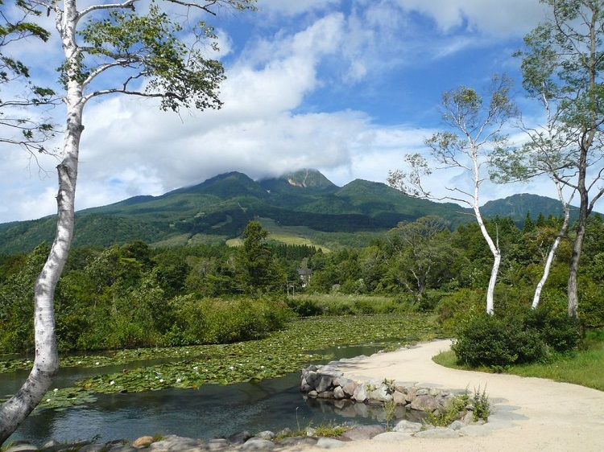

新潟の観光スポット
| 名前 | ジャンル | 住所 | 営業時間 | 休館日 | 料金 | 詳細情報 |
|---|---|---|---|---|---|---|
| 佐渡金山 | 歴史 | 佐渡市 | 9:00-17:00 | 無休 | 大人：1,200円 | 佐渡金山 |
| 苗場スキー場 | スキー・スノーボード | 苗場村 | 8:30-17:00 | 12月下旬-4月中旬 | 大人：6,000円 | 苗場スキー場 |
| 弥彦神社 | 神社 | 弥彦村 | 8:00-17:00 | 無休 | 無料 | 弥彦神社 |
新潟グルメ
新潟のイベント情報
新潟の風景

| 名前 | ジャンル | 住所 | 営業時間 | 休館日 | 料金 | 詳細情報 |
|---|---|---|---|---|---|---|
| 佐渡金山 | 歴史 | 佐渡市 | 9:00-17:00 | 無休 | 大人：1,200円 | 佐渡金山 |
| 苗場スキー場 | スキー・スノーボード | 苗場村 | 8:30-17:00 | 12月下旬-4月中旬 | 大人：6,000円 | 苗場スキー場 |
| 弥彦神社 | 神社 | 弥彦村 | 8:00-17:00 | 無休 | 無料 | 弥彦神社 |